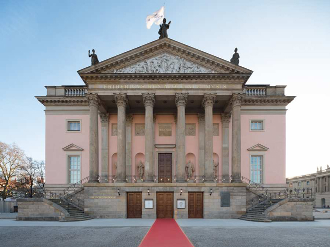
A work trip to Berlin with my boss Diana Mulgan. We had come to the reopening of the Opera Unter-den-Linden, Berlin's oldest opera house, for a performance of Rossini's Tancredi.
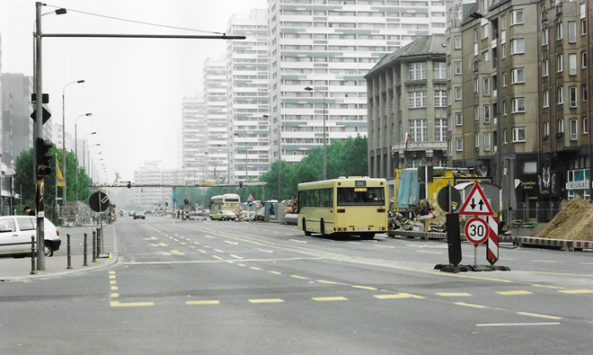
The morning after the opera, we went out to explore and found much of what was previously East Berlin grim and relatively deserted. However, ten minutes later 10,000 runners came charging through: it was the Berlin Marathon ...
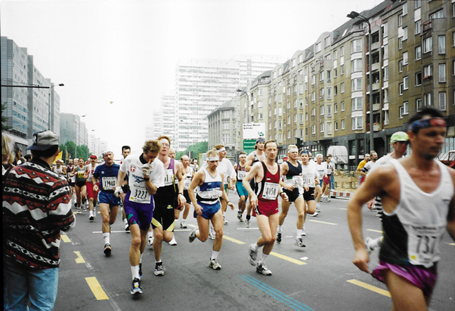
It was now 1994, but the Berlin Wall had only come down five years earlier in 1989 and there was still much evidence of the old regime.
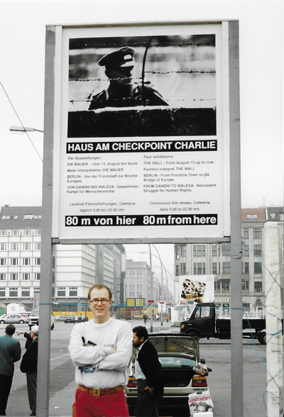
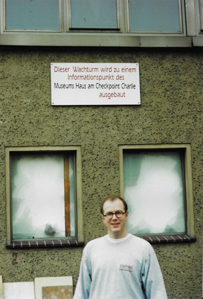
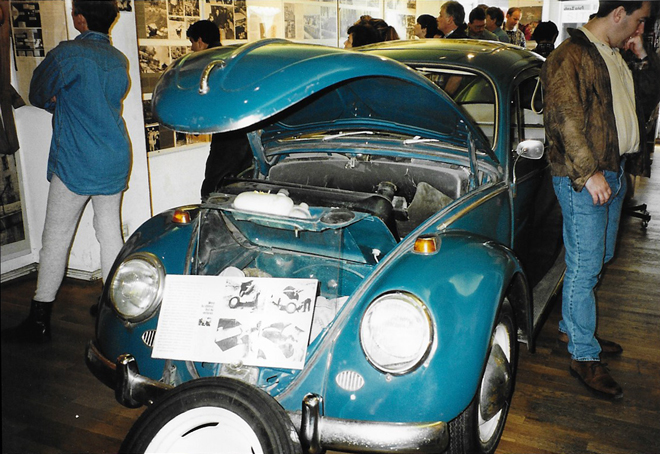
In the Checkpoint Charlie Museum we saw a modified car which had been used to smuggle people across into West Berlin.
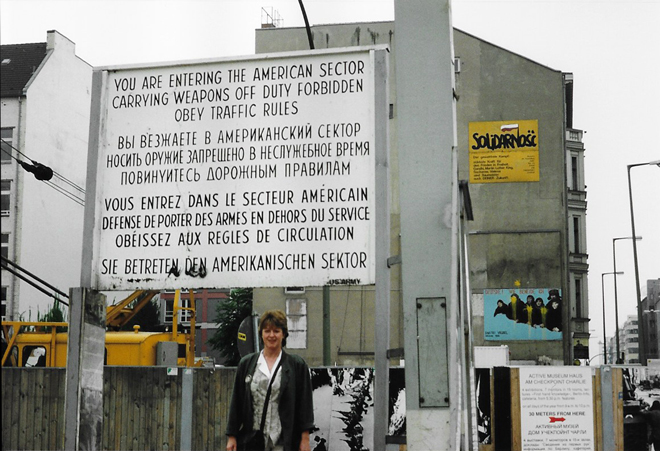
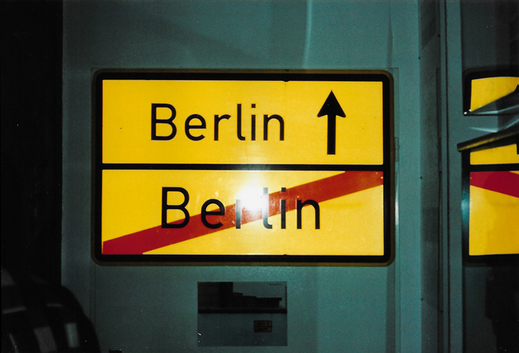
There had been a building boom since the Wall came down - I'm not sure what this site eventually turned into, but it was certainly a large hole in the ground!
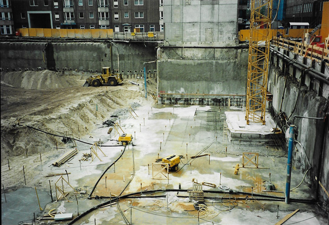
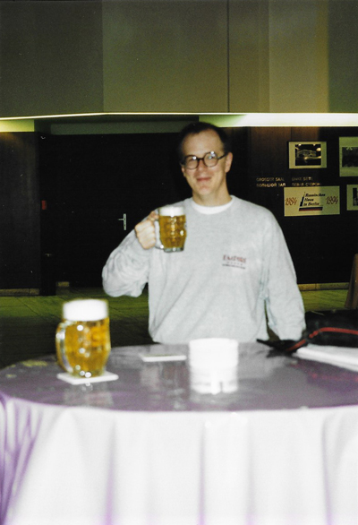
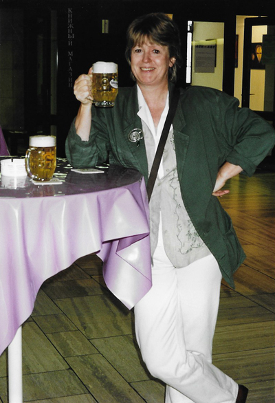
After a busy morning exploring it was definitely time to stop for a beer - in this case a very Soviet-style cavernous hall for 'the workers' - but with all the pillars supporting the roof covered in books.
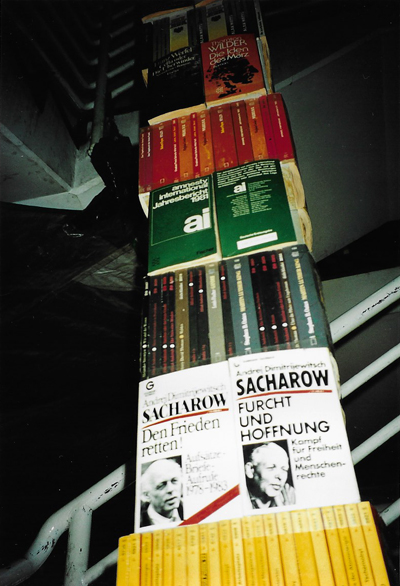
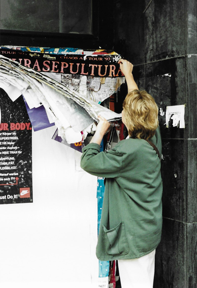
Bill-posters in Berlin clearly never remove the posters they replace: they just paste the new poster on top of all the rest so, as here, the weight of the posters on the wall eventually peels them off ...
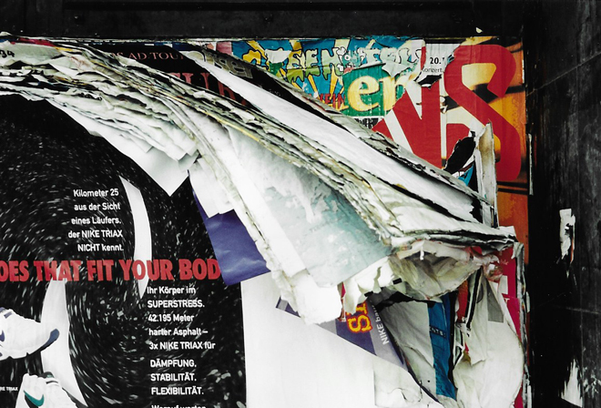
Some random shots of architectural features.
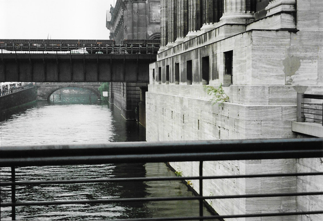
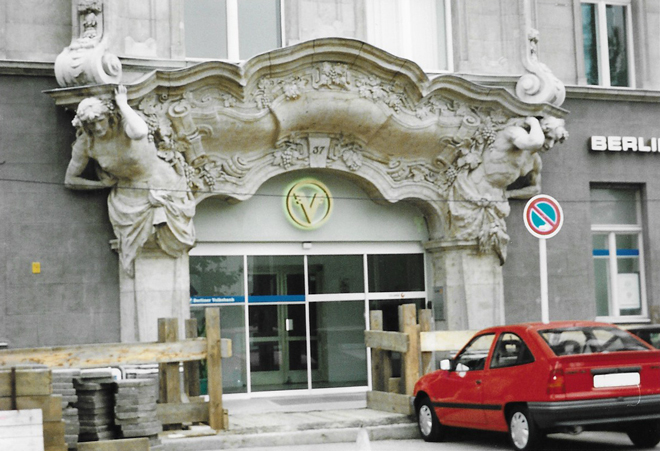
Both Diana and I were keen readers and often recommended books to each other. I had recently read David Leavitt's The Lost Language of Cranes and here was Diana acting out a scene in the book.
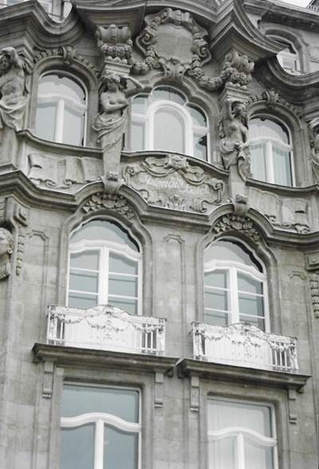
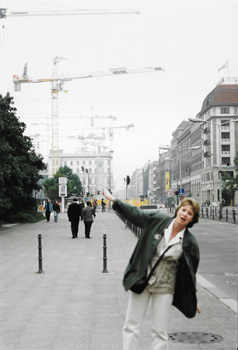